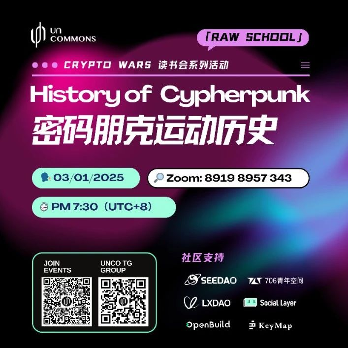

SeeDAO支持｜Crypto Wars 读书会：密码朋克运动历史
作者: Uncommons
分类:
密码朋克, 区块链, 比特币
为什么密码朋克更相信数学能保护公民，匿名是公民的盾牌？

“ 也许从表面上看，密码朋克对政府的高度不信任显得过于极端，但如果透过历史滥权的角度来看，便能理解为什么他们宁可相信数学能保护公民，而非依赖那套「他们认为无效」的权力制衡机制，或有可能独裁成性、又易受外力操控的总统。”密码朋克一直致力于严肃地与权力抗衡，这场斗争起源于上世纪60年代，一直延续到今天。我们依然可以看到主权政府要求企业开放其数据库，为私人数据装有特殊访问的后门。“密码朋克认为匿名是公民的盾牌，因为人们的肉体形式（而非他们的思想）容易受到攻击。思想可以被压制，但永远无法被摧毁。”——Craig Jarvis，《密码战争：数字时代的隐私之战——数字加密的政治史》这周末，Raw School将邀请Kurt Pan将主讲密码朋克历史，并组织部分正在进行的《密码战争》读书会成员进行圆桌会谈，作为该读书会的第一次活动。活动线上进行，欢迎大家的旁听与参与。▶ 时间：3.1（Sat） 19:30 （UTC+8）▶ 加入 Zoom 会议https://us06web.zoom.us/j/89198957343?pwd=GYSVzWYOCXdnIVdo0usgQYgUaAJtWh.1会议号: 891 9895 7343密码: Uncommons--------------------✨《密码战争》读书会持续报名中！了解更多👇第三次密码战争大爆发？｜Raw School 读书会报名参加：https://tally.so/r/nPG1Jx